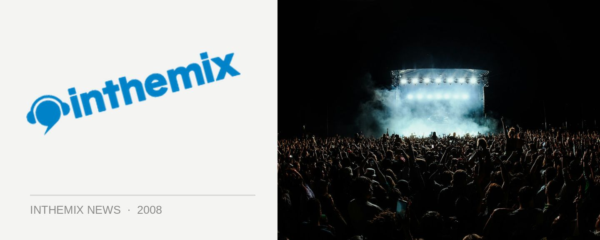

Curtain drops on Sensation NYE lineup!
The news that world renowned event Sensation would be coming to Melbourne this NYE has no doubt been the biggest thing to happen in dance music all year, but up until now organisers have kept silent on the lineup of DJs who would provide the soundtrack to the party’s first ever appearance on Australian soil. The silence ends now, however, as ITM can reveal the international and local stars who we’ll be seeing behind the decks this New Years Eve in Melbourne.
The main room is where all of the dramatic action takes place, and the Sensation team has revealed the running order in which performers will appear on the night. Sydney’s Ben Morris will be up first to warm the crowd, followed by house legend Erick Morillo who’ll take the party towards the midnight countdown. Melbourne heavyweights Grant Smillie and John Course will then take the reigns, followed by the ‘Release’ – the pinnacle of the evening when the DJs take a step back and the full audio-visual spectacle takes over.
Sensation global resident Fedde Le Grande hits the decks next to show why he’s been swiftly elevated into the A-list of international DJ talent, followed by tech-trance icon Marco V, and to wrap things up into the early morning, our very own 2008 Sony inthemix50 #1 tyDi. Of course the music will only represent a fraction of the Sensation experience overall: expect pyrotechnics, performers and a level of production never before seen at an Australian dance event!
For the entire lineup, including artists appearing in the ‘Trance Room’ and the two ‘Deluxe’ rooms, head to the inthemix Festival Page where you can view the full Sensation event flyer.
Sensation NYE main arena running order:
Ben Morris
Erick Morillo
Grant Smillie & John Course
Release
Fedde Le Grande
Marco V
tyDi
Remember to keep your eyes glued to inthemix in the lead-up to Sensation NYE as we’ll bring you all the latest event info and updates.